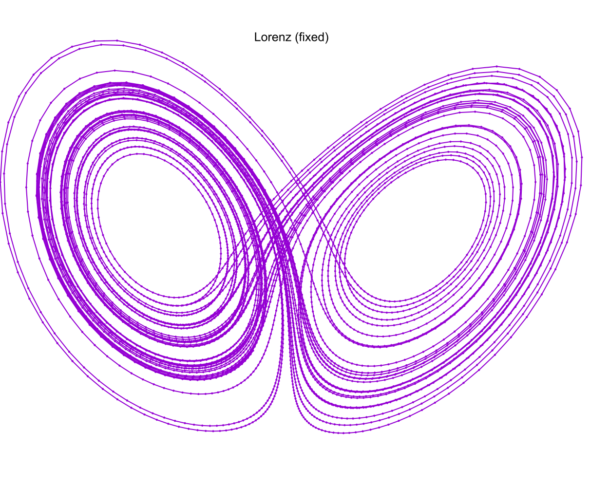

The Lorenz Attractor
A MRKISS Library Example Program
| Author: | Mitch Richling |
| Updated: | 2025-09-04 13:34:20 |
| Generated: | 2025-09-05 17:00:44 |
Copyright © 2025 Mitch Richling. All rights reserved.
Table of Contents
1. Introduction
The code for this example is found in examples/lorenz.f90. Additionally the
code may be found at the end of this document in the section Full Code Listing.
One strange thing when visualizing strange attracters is that we are frequently less concerned with the absolute accuracy of the solution curves than we are
with the spacing of the solution points. This example uses the Lorenz attractor to explore some of the tools
MRKISS provides for these kinds of problems.
2. Curve Evolution Animation
For animations of the evolution of the curve we normally use a fixed \(\Delta{t}\) because this preserves time in the animation. That is to say we can see the
point tracing the curve speed up and slow down as the derivative changes. We can produce such a solution with the fixed_t_steps solvers. Here is an
example of such a curve:

Notice the way some of the steps are much longer than others. This is especially apparent in the upper left:
Many path animation tools have the ability to interpolate intermediate points on piecewise curves. Some even have the ability to use derivative information and do Hermite interpolation. Having a few longer steps when using such a tool is no issue. OTOH, when simply animating successive solution steps, large steps can make the animation jerky. When this happens, if you still want to preserve time in the animation, the only real solution is to decrease the value used for \(\Delta{t}\).
The solutions used in the images above were created by this snippet of examples/lorenz.f90:
call fixed_t_steps(status, istats, solution, eq, y_iv, param, a, b, c, t_delta_o=t_delta, t_max_o=t_max) print '(a)', status_to_message(status) call print_istats(status, istats) call print_solution(status, solution, filename_o="lorenz_fixed.csv", end_o=istats(1), t_min_o=50.0_rk)
3. Sphere Sweeps
Ray tracing tools can render scenes made up of spheres orders of magnitude faster than they can deal with things like triangles. Because of this fact it is common practice to represent curves in space as thousands, or millions, of spheres tightly packed along the curve – this is called a "sphere sweep". In order for this to work out the spheres need to be close together so that the angles of intersection are very small. Still we don't want too many spheres as every sphere adds time to the overall render. What we really want is to compute the optimal distance between the sphere centers, and then use this distance for all the spheres. That means we want steps of constant \(\mathbf{\Delta{y}}\).
Solutions with constant \(\mathbf{\Delta{y}}\) steps are also used for constant velocity animations of curve evolution. These can be interesting when done with groups of stream lines.
MRKISS provides two solvers for this situation:
fixed_y_steps- This solver uses considerable compute resources to insure that every step is the same length to a user provided tolerance. It requires the user provide minimum and maximum bounds for \(\Delta{t}\) which will bracket the correct value. The resulting curves are perfect for high quality sphere sweep renders.
sloppy_fixed_y_steps- This solver only approximates optimal \(\Delta{t}\). In exchange for this inaccuracy, this routine is much faster than the previous option. The resulting solutions frequently good enough for a sphere sweep.
Here are some representative samples:
These images were created by the following snippet of examples/lorenz.f90:
call sloppy_fixed_y_steps(status, istats, solution, eq, y_iv, param, a, b, c, 1.0_rk, t_delta, t_max_o=t_max) print '(a)', status_to_message(status) call print_istats(status, istats) call print_solution(status, solution, filename_o="lorenz_sloppy_condy.csv", end_o=istats(1), t_min_o=50.0_rk) ! This solution will have y-delta approximately equal to 1.0 for all steps. print '(a)', repeat('*', 120) print '(a)', "sloppy_fixed_y_steps short" call sloppy_fixed_y_steps(status, istats, solution, eq, y_iv, param, a, b, c, 1.0_rk, t_delta, t_max_o=t_max, & adj_short_o=1) print '(a)', status_to_message(status) call print_istats(status, istats) call print_solution(status, solution, filename_o="lorenz_sloppy_condy_short.csv", end_o=istats(1), t_min_o=50.0_rk)
4. Limiting Step Length
When drawing line plots of curves we normally want them to be appear smooth which means we must avoid large values for \(\mathbf{\Delta{y}}\). For curve line drawing we normally are not terribly concerned with having a few short intervals because they don't have a huge impact on rendering speed.
When rendering curves as tubes most tools render a sphere at each point and a cylinder connecting the points. As with line drawings we want the curve to appear smooth, and so we wish to avoid large values for \(\mathbf{\Delta{y}}\). When rendering tubes we are more sensitive to excessive numbers of short intervals because every point impacts rendering speed. In addition, with some tools, very short intervals can introduce rendering glitches.
Of course we can use fixed_y_steps and sloppy_fixed_y_steps(..., adj_short_o=1) as we did in the previous section; however,
sloppy_fixed_y_steps without the adj_short_o=1 argument that may be more useful. Without this option only steps longer than the target are adjusted.
Here is the result:
The solution used in the image above was created by this snippet of examples/lorenz.f90:
call fixed_y_steps(status, istats, solution, eq, y_iv, param, a, b, c, 1.0_rk, t_delta*7, t_max_o=t_max) print '(a)', status_to_message(status) call print_istats(status, istats) call print_solution(status, solution, filename_o="lorenz_condy.csv", end_o=istats(1), t_min_o=50.0_rk)
5. Full Code Listing
5.1. Fortran Code
program lorenz use :: mrkiss_config, only: rk, istats_size use :: mrkiss_solvers_nt, only: fixed_t_steps, sloppy_fixed_y_steps, fixed_y_steps use :: mrkiss_utils, only: print_solution, print_istats, status_to_message use :: mrkiss_erk_kutta_4, only: a, b, c implicit none integer, parameter :: deq_dim = 3 integer, parameter :: num_points = 100000 real(kind=rk), parameter :: y_iv(deq_dim) = [1.0_rk, 0.0_rk, 0.0_rk] real(kind=rk), parameter :: param(3) = [10.0_rk, 28.0_rk, 8.0_rk/3.0_rk] real(kind=rk), parameter :: t_delta = 0.01_rk real(kind=rk), parameter :: t_max = 100.0_rk real(kind=rk) :: solution(1+2*deq_dim, num_points) integer :: status, istats(istats_size) ! This solution will have fixed t-delta, but no control over y-delta. print '(a)', repeat('*', 120) print '(a)', "Fixed t_delta run" call fixed_t_steps(status, istats, solution, eq, y_iv, param, a, b, c, t_delta_o=t_delta, t_max_o=t_max) print '(a)', status_to_message(status) call print_istats(status, istats) call print_solution(status, solution, filename_o="lorenz_fixed.csv", end_o=istats(1), t_min_o=50.0_rk) ! This solution will have y-delta approximately capped to a maximum of 1.0 for all steps. print '(a)', repeat('*', 120) print '(a)', "sloppy_fixed_y_steps" call sloppy_fixed_y_steps(status, istats, solution, eq, y_iv, param, a, b, c, 1.0_rk, t_delta, t_max_o=t_max) print '(a)', status_to_message(status) call print_istats(status, istats) call print_solution(status, solution, filename_o="lorenz_sloppy_condy.csv", end_o=istats(1), t_min_o=50.0_rk) ! This solution will have y-delta approximately equal to 1.0 for all steps. print '(a)', repeat('*', 120) print '(a)', "sloppy_fixed_y_steps short" call sloppy_fixed_y_steps(status, istats, solution, eq, y_iv, param, a, b, c, 1.0_rk, t_delta, t_max_o=t_max, & adj_short_o=1) print '(a)', status_to_message(status) call print_istats(status, istats) call print_solution(status, solution, filename_o="lorenz_sloppy_condy_short.csv", end_o=istats(1), t_min_o=50.0_rk) ! This solution will have y-delta equal to 1.0 for all steps. print '(a)', repeat('*', 120) print '(a)', "fixed_y_steps" call fixed_y_steps(status, istats, solution, eq, y_iv, param, a, b, c, 1.0_rk, t_delta*7, t_max_o=t_max) print '(a)', status_to_message(status) call print_istats(status, istats) call print_solution(status, solution, filename_o="lorenz_condy.csv", end_o=istats(1), t_min_o=50.0_rk) contains subroutine eq(status, dydt, y, param) integer, intent(out) :: status real(kind=rk), intent(out) :: dydt(:) real(kind=rk), intent(in) :: y(:) real(kind=rk), intent(in) :: param(:) dydt(1) = param(1)*(y(2)-y(1)) ! a(y-x) dydt(2) = y(1)*(param(2)-y(3))-y(2) ! x(b-z)-y dydt(3) = y(1)*y(2)-param(3)*y(3) ! xy-cy status = 0 end subroutine eq end program
5.2. GNUplot Code
The images were produced with GNUplot.
set encoding utf8 set termoption noenhanced set datafile separator ',' # set xlabel "x" # set ylabel "y" # set zlabel "z" #set grid set margins 0, 0, 0, 0 set view 70, 40, 1.3, 1.4 set xyplane at 0 unset border unset ytics unset ztics unset xtics set terminal svg set pointsize 0.2 set title "Lorenz (fixed)" set output "lorenz_fixed.svg" splot 'lorenz_fixed.csv' using 3:4:5 with linespoints pt 7 title "" set title "Lorenz (sloppy condy)" set terminal svg set output "lorenz_sloppy_condy.svg" splot 'lorenz_sloppy_condy.csv' using 3:4:5 with linespoints pt 7 title "" set title "Lorenz (sloppy condy short)" set terminal svg set output "lorenz_sloppy_condy_short.svg" splot 'lorenz_sloppy_condy_short.csv' using 3:4:5 with linespoints pt 7 title "" set title "Lorenz (condy)" set terminal svg set output "lorenz_condy.svg" splot 'lorenz_condy.csv' using 3:4:5 with linespoints pt 7 title ""